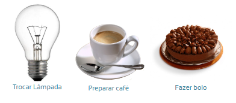

O que é algoritmo?
Um algoritmo é uma sequência de instruções que utilizamos para solucionar um ou vários problemas, ou até mesmo realizar tarefas do dia a dia.
Um algoritmo não é necessariamente um programa computacional, pode ser passos que iremos tomar para realizar determinada tarefa.
O algoritmo deve sempre chegar ao resultado final esperado, caso não chegue, o mesmo não pode ser considerado finalizado.
Exemplos de algoritmos do dia-a-dia
